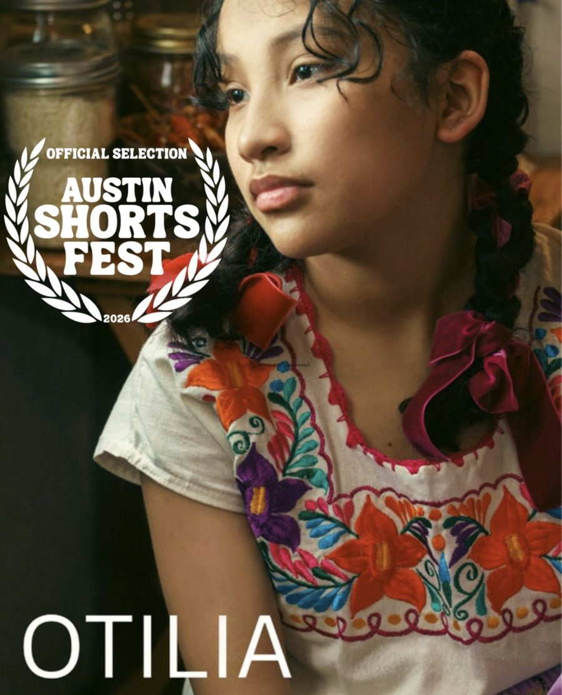
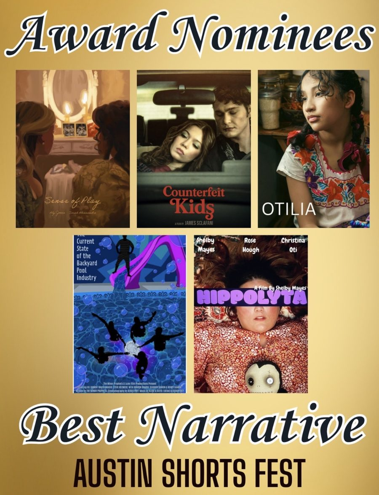

I'm an electrical engineer, teacher, and filmmaker. My work asks one question: how do you build engineering tools that any audience can experience, learn from, and teach to others? These are the projects from my first semester of graduate coursework. Where a project has a live demo, it runs in your browser.
A toy recommendation system built on the Data, Information, Knowledge, Wisdom, Intelligence, and Creativity layers from Wan and Alagar (2014). Every recommendation carries its full reasoning trace, and safety rules can veto a toy before it is ranked.
An IF-THEN rule system for a machine that sells tea, coffee, and hot chocolate. It gates on valid coins, carries credit across several drinks, tracks one shared stock count, and returns change. Implemented and tested in MATLAB, and rebuilt here so you can try it.
A rule-based system that moves a robot across a grid to a target object while avoiding obstacles. Rules fire from working-memory facts, and conflicts are resolved by specificity, refractoriness, and a fixed tie-break order. The robot reaches the goal in 22 cycles.
Fuzzy logic, from hand calculations to a working system. Problems 1 to 3 cover the extension principle and a tank-level controller. Problem 4 is a Mamdani system that turns four features of a 1024-bin gamma spectrum into a threat confidence from 0 to 100, with sixteen rules and five test scenarios.
An interactive version of the line-modeling problems. Enter a three-phase line and a load, and it solves the short-line, nominal pi, and exact models side by side, then plots voltage regulation against length so you can see where the simple models fail. It also builds the equivalent pi circuit.
The same course covered phasors and complex power, three-phase circuits, nodal analysis, transformer equivalent circuits and delta-wye phase shift, and per-unit reactance diagrams. I keep my worked solutions for my own study and do not post them here.
Convolution as the zero-state response, the transfer function and impulse response, and a state-space realization, turned into a tested Python package and a browser demo. Scrub a convolution, or drag the coefficients and watch the poles, stability, and state-space matrices update.
Official selection at the Austin Shorts Fest in 2026, and nominated for Best Film and Best Narrative. I proposed myself for the role with no film experience, then managed the logistics and the crew with a teacher's habits and an engineer's problem solving.

Official selection, 2026

Nominee, Best NarrativeNominee, Best Film
LEKE IS THE CULTURE
Founder
The company I'm building around filmmaking, education, and community. The LEKE Digital Center is the learning center I'm developing: after-school and weekend STEM with hands-on electronics, run at low cost and designed to repeat in other places.